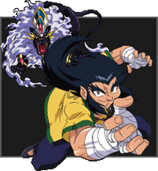
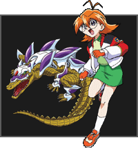
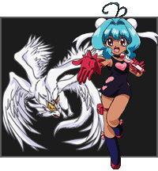

|
| |
|
Tyson is a strong-willed teen who's not afraid to speak his mind and in so doing, he seems to get into more trouble than most kids his age. Tyson isn't a born leader, yet because of
his magnetic personality and self-confidence, people seem to gravitate toward him. No situation is too risky for Tyson, and he often jumps in blind, relying on his skill and natural talent to win the day. Tyson's Beyblade is Dragoon. His style of playing
is aggressive and all in all, Tyson is one fierce competitor.
BEYBLADE DRAGOON GALAXY DRAGOON GALAXY TURBO Tyson's Beyblade uses special attacks that take on the form of a Dragon, and is one of the fiercest, more powerful Beyblades around. SPECIAL ATTACK Galaxy Storm Galaxy Turbo Twister Twin Tornado Attack (only with Daichi) |
|
|
Kai can convey his emotions with only a look. And with
his strong physical presence, everyone respects him…
or else! Although Kai is a top-level competitor, he has always preferred to keep to the shadows rather than the bright lights of the Beystadium. Kai 's Bit Beast is Dranzer. His fighting style is fierce and he has a 'take no prisoners' mentality in the Beystadium.
BEYBLADE DRANZER GIGS DRANZER GIGS TURBO Kai's Bit Beast Dranzer takes the form of the Phoenix, a mythological fire-bird of enormous power and strength. SPECIAL ATTACK Blazing Gig Flame Gigs Turbo |
|
|
Ray may be quiet, but beneath his low-key demeanor he
is incredibly confident. Ray always looks before he leaps, especially when it comes to Beyblade Battles.
Ray met the Bladebreakers after battling in a tournament as a member of the White Tigers team. After being totally awestruck by the opposition, Ray decided to jump ship and join the Bladebreakers, and also gained a true and loyal friend in Tyson. This time around, Ray wants to prove himself against Tyson in the World Championship Tournament, and the way to accomplish that is to beat Tyson in the finals. Ray reunites with his old teammates and goes on to form the White Tigers X team.
BEYBLADE DRIGER GATLING Ray's Bit Beast attack takes the form of a White Tiger which is a Symbol of strength and unity. With a lightening fast swipe of its powerful paw, it can easily lay flat any opponent. SPECIAL ATTACK Gatling Claw |
|
|
Bright, cheerful and always ready to take on a new Beyblade challenge, Max is the best friend any kid could have. He is a true strategist and when it comes to battling he is a fierce competitor, always looking for a new angle or tactic to win. Max is a master of defensive moves, and what makes his methods even more interesting is the fact that his style is completely opposite of Tyson's. Max's Bit Beast is Draciel, and defense and strategy are the keys to his game.
BEYBLADE DRACIEL GRAVITY Max's Beyblade utilizes the form of an ancient turtle when the special attacks are used. Draciel's specialty is a powerful defensive shell that is nearly impossible to break through. SPECIAL ATTACK Gravity Control |
|
|
The resident 'brain' of this series is Kenny. Kenny never goes anywhere without his trusty laptop. That's where he's amassed every known statistic on Beyblade and their owners. Kenny can call up in an instant a players ranking or with a few quick keystrokes, a detailed analysis of the mechanical workings on all Beyblades in the world.
BEYBLADE HOPPER SPECIAL ATTACK Frog splash attack |
|
|
This relative newcomer to the Beyblade scene made quite the entrance. After using hurricane force winds to get Tyson's attention, this young upstart proved himself by defeating numerous opponents and earning himself a seat on the newly formed BBA Revolution team. Daichi argues with Tyson and Hilary but they remain close friends. He is naturally hyperactive and young but these traits set him apart from the competition.This rookie also happens to be one of the strongest Beybladers around.
BEYBLADE STRATA DRAGOON SPECIAL ATTACK Great Cutter Twin Tornado Attack (with Tyson) |
|
|  |
Lee is an intense Beyblader who has little time for incompetent combatants. He's quick to anger and speaks his mind, and also has a tendency to push himself a little too hard. Lee can often harness his passion for Beyblading into the strength and resolve required to win, and is also able to predict and follow his opponent's every move. From Ray, Lee also learns that temwork is primarily about helping each other. Lee's Bit Beast is Galeon.
BEYBLADE Galeon 2 SPECIAL ATTACK Spiral lightning |
|
He may be small, but Kevin is one nimble character. Kevin is the fastest Beyblader around and that includes his mouth. His taunting tactics not only annoy, but also provoke his rivals. And when facing off against another team, it's Kevin who provides both physical and verbal distractions from the battle at hand.
BEYBLADE Galman SPECIAL ATTACK Crazy Monkey |
|
|
Gary is a giant amongst Beyblader's, literally! This behemoth may love Beyblading but sometimes it's overshadowed by his love of food. Gary has even been known to throw a battle or two because of his insatiable appetite. And even though Gary is a giant, he pretty much keeps to himself. Under that immense physique is one of the gentlest creatures on earth.
BEYBLADE Galzzly Bear Ax |
|
|
She is Lee's little sister. Mariah may not be as intense a Beyblader as Ray or Lee but she more than makes up for that by being there when her team needs her. Her cheerful attitude and support of her teammates makes her a valuable addition to the White Tiger X team. Mariah's Beyblade is Galux.
BEYBLADE Galux SPECIAL ATTACK Cat bites |
|
|
Rick was raised in a in a pretty rough neighbourhood where, everyone tried their best to make a decent life for themselves. Rick chose the way of the Beyblade, and making it to the World Championships was one way of setting a great example. At first he is mistaken as a person who feels that working with a partner is unnecessary to win Beybattles. Rick later comes to the realization that no one Beyblader can be as powerful as many working together as a team. He also carries his stereo around whenever he Beybattles. It provides him with extra motivation, and also tends to distract his opponents.
BEYBLADE Rock Bison SPECIAL ATTACK Drop Rock |
|
|
Michael is a true jock, meaning that no matter what sport he attempts, he's always the best. Michael loves baseball, but when it comes to Beyblade, Michael is sometimes more flash than substance. Michael is a great teammember to have around, but on occasion his jealousy of Max and Rick tends to get in the way. Michael's Beyblade is Trygle 2.
BEYBLADE Trygle 2 SPECIAL ATTACK SUPER CANNON ATTACK |
|
|
When it comes to 'slammin'', Eddy's your man! Eddy lives and breathes basketball 24-7. He wears the gear, is never far from an outdoor court and rarely travels anywhere without his basketball. As a Beyblader, Eddy fits right in with the PPB All Starz, that's because of his competitive nature.
BEYBLADE Trypio SPECIAL ATTACK STING SHOOT |
|
|  |
Emily is a skilled tennis player and, like any true jock, she was born with a competitive instinct. She is full of energy, is great with strategic analysis, and is always ready to take on anyone in a Beystadium. Emily's Beyblade is Trygator.
BEYBLADE Trygator SPECIAL ATTACK WATER SMASH |
|
Tala has been trained from a young age to be a Beyblader, even so far as being genetically enhanced to ensure victory. After discovering that Boris is the
mastermind behind the BEGA league, Tala rallies his
fellow Blitzkrieg Boys in an effort to thwart Boris' master plan. Being Kai's partner isn't the best situation he could be in, but at least he knows he won't have to baby sit him. Tala's Beyblade is Wolborg.
BEYBLADE Wolborg 4 SPECIAL ATTACK novae Rog |
|
|
Bryan was specially trained by the Biovolt Corporation. But because of his experiences, he tends to be extremely wary of trusting anyone other than his fellow teammates. With Kai's return to the team, Bryan is forced to take the back bench with the Blitzkreig Boys. His Beyblade is Falborg.
BEYBLADE Falborg SPECIAL ATTACK Stroblitz |
|
|
Like Tala and Bryan, Spencer has been trained from a young age to be a Beyblader. Spencer is large in stature but is the strong silent type. His Beyblade is Seaborg.
BEYBLADE Seaborg 2 SPECIAL ATTACK Stramolyu |
|
|
Coach Barthez called upon the most competitive Beyblader's around and created a team called Barthez Battalion. Miguel is regarded as the leader of his team, that is as long as he goes along with Barthez's directions. Miguel was trained to be a professional Beyblader by Barthez, as well as having his Beyblade provided by him. Miguel used to think that he should do whatever it takes to win a Beybattle, even if it went against his first instincts. However, when Miguel battles Tyson, his true Beyblader spirit show's him the error of his ways.
BEYBLADE Dark Gargoyle |
|
|
Like Miguel, Claude was personally trained in the way of the Beyblade by Barthez himself. His admiration and respect for his friend Miguel's skill in the Beystadium is quite profound. When his game is off, a little encouragement from Miguel usually helps to give him the extra edge he needs to come out the victor. That is of course, when Coach Barthez doesn't have any 'suggestions'.
BEYBLADE Rapid Eagle SPECIAL ATTACK TWIN SABER |
|
|
Aaron is a fairly complacent Beyblader. Not very quick to get angry, he is usually fine with following Coach Barthez's orders, regardless of the consequences. The problem is, the more he finds himself acting against his morals, the more he seems to question it. He just doesn't have the nerve to go up against Barthez on his own.
BEYBLADE Rushing Boar SPECIAL ATTACK SPIN CHARGE |
|
|
Mathilda fears Coach Barthez more than any other team members. She felt that there was something wrong with him but she kept following his orders out of fear. When Miguel and other members start to stand up to Barthez, Mathilda also starts thinking on her own. Mathilda is also the unofficial little sister to the rest of her teammates.
BEYBLADE Pierce Hedgehog SPECIAL ATTACK POISON NEEDLE |
|
|
Raul and Julia are twins, that were raised by a circus troupe. With this background, they both have quite a unique Beyblading style. Using acrobatic tricks as well as feats of dexterity, their skill with a Beyblade is a beautiful thing to behold. Raul is a little shy compared to his sister. Being born a few minutes later than Julia makes him the 'little' brother.
BEYBLADE Torch Pegasus SPECIAL ATTACK FUERZA VALIENTE GEMINI ATTACK (With julia) GEMINI CRASH (With julia) |
|
|
Being the 'older' sister, Julia is usually the one bossing her brother around and giving the orders. Being trained by Romero from a very young age, both Raul and Julia have an uncanny ability to work together as a team. The downside to this is that most of the techniques that they use in the Beystadium mirror each other, so that when they aren't battling together, they can be fairly predictable.
BEYBLADE Thunder Pegasus SPECIAL ATTACK TODA LA FUERZA GEMINI ATTACK (With raul) GEMINI CRASH (With raul) |
|
|
Brooklyn is a brilliant Beyblader. He Beyblades like it involves no skill or effort at all, going as far as making it look easy. But, such raw talent made it unnecessary for him to pay his usual dues and as a byproduct, made it difficult to make many friends. When Brooklyn battles against opponents that are not up to his skill level, he often displays an unenthusiastic attitude. Brooklyn does not make any extravagant attacks, instead he just waits until his opponents run out of spin on their own. However, if Brooklyn ever finds himself losing a battle, his uncanny talent somehow harnesses negative energy in such a way that it creates a black hole.
BEYBLADE Zeus SPECIAL ATTACK KING OF DARKNESS |
|
|
Garland comes from a family of professional athletes. His oldest brother is a major league baseball player as well as a Triple Crown winner. His older brother is a Formula 1 champion driver for two consecutive years. His sister is a tennis player who won the championship tournament at Wimbledon. Garland chooses his path as a top Beyblader, to prove himself as his brothers and sister have already done. For this reason he joins the ranks of the BEGA league, with the hope that he can one day be as famous as his siblings. Garland's battle style is to endure his opponent's attacks first and then evaluate before he counterattacks.
BEYBLADE Appollon SPECIAL ATTACK RADIENT THUNDER |
|
|
Crusher was struggling in poverty before he joined BEGA. His main goal was to help his sister receive the medical attention that she needs. Crusher started to Beyblade much later in life than most Blader's, but his desire to help his sister gave him the edge to becoming a fantastic Beyblader. Crusher aspires to become a professional Beyblader and make a living with it. With his kind heart, he sometimes comes off as a big, dangerous teddy bear.
BEYBLADE Gigars SPECIAL ATTACK DEMOLITION AX |
|
|
This Blader literally floats like a butterfly, and can sting like a bee. Mystel has an unusual ability to defy gravity, or so it seems. This surprising newcomer seems to have appeared out of nowhere, and has more than proved himself worthy of being a professional Beyblader. His attacks are swift, and not easily predicted.
BEYBLADE Poseidon SPECIAL ATTACK OCEAN JAVELIN |
|
|  |
Being the poster girl for the BEGA league can have its perks. This teen idol provides entertainment in the form of singing the praises of the BEGA organization. Don't let this fool you though, because she is also a top notch Beyblader. She also uses her singing to help her concentration during a match, as well as to distract her opponents.
BEYBLADE Venus SPECIAL ATTACK V TEMPTATION |